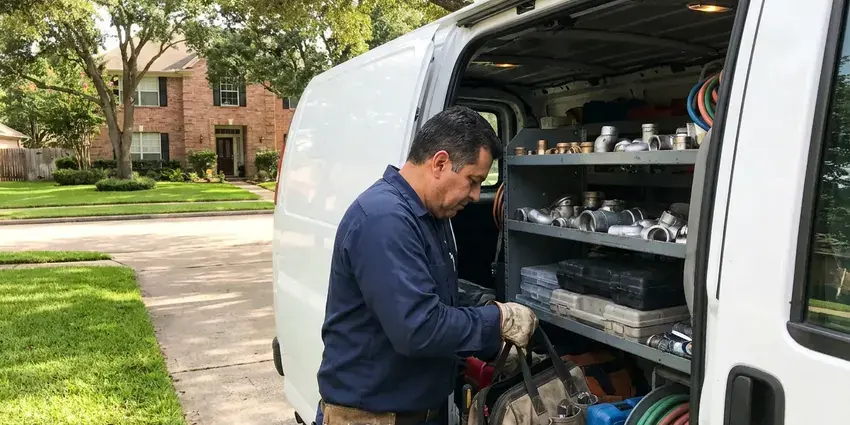

Water Damage Restoration in Murray, UT
Water damage in Murray, UT gets measured, not guessed, with pin meters, pinless meters and thermal imaging.
- Fast Emergency Response
- Daily Moisture Readings
- Rapid Emergency Water Response
- Insurance Documentation Support

Water on the Floor in Murray, UT? Call Now.
Call now and a crew will shut off the water, fix the leak and begin extraction as soon as possible.
Complete Water Damage Restoration From the Plumbing Up in Murray, UT
BPK Plumbing handles water damage from start to finish, beginning with the plumbing repair that stops the water. We extract standing water, remove damaged materials, set up dehumidifiers and air movers and monitor moisture until the structure is dry. We check every day.
Some of what we do:
- Structural drying and dehumidification
- Drywall, baseboard and cabinet removal and replacement after drying
- Flood cuts and wall cavity drying

Additional Plumbing Maintenance Services in Murray, UT
Our maintenance and specialty plumbing services in Murray, UT catch small problems before they become emergencies.


Customers
Why Choose BPK Plumbing for Water Damage Restoration in Murray, UT?
Using BPK Plumbing for water damage means one crew for the leak, the drying and the rebuild in Utah. You skip the gap between trades. The plumber who fixed the pipe can tell the restoration tech exactly how long it ran and how far the water likely traveled inside the wall.
- Source Repaired, Our plumbers fix the leak on the first visit so drying can start.
- Moisture Mapping, Meters and a thermal camera find moisture behind walls and under floors.
- Measured Drying, We track moisture readings daily until materials reach safe levels.
Citywide Coverage
We provide water damage restoration in every neighborhood of Murray, from single-story homes to two-story houses and condos. Every truck has extraction gear, drying equipment, meters and a thermal camera. Nothing waits on gear.
Experienced Team
Every technician on our BPK Plumbing crew in Utah is trained and experienced. They assess the damage, set up drying, and handle any rebuild to local building codes, so the wall that goes back up passes inspection. Code is not optional.
Safety-First Approach
We classify water by source and contamination level and use protective gear and antimicrobial treatments when needed. Before entering, we handle electrical hazards and check for sagging ceilings. Sagging drywall is dangerous.
Trusted Certified Murray Plumbing Services Professionals
At BPK Plumbing, we are proud to offer certified plumbing services throughout Murray, UT. Those papers on the wall mean something. Our plumbers hold recognized industry credentials, and they follow strict safety and quality rules on every repair, installation and maintenance call we run.
Call Us Now PHCC Plumbing Contractor Recognition
PHCC Plumbing Contractor Recognition Better Business Bureau (BBB) Accreditation
Better Business Bureau (BBB) Accreditation Angi Certified Pro
Angi Certified Pro ISO 9001 Quality Management Certification
ISO 9001 Quality Management CertificationWater Damage Restoration in Murray, UT
Foundation Water Damage Mitigation in Murray, UT
Water pooling against a slab or soaking a crawl space can move soil and stress the structure. Rocky ground can make sewer line and water service repairs more involved, and trenchless methods are often a good fit where digging is tough. We extract and dry what we can reach, then look at where the water came from, whether it was a plumbing leak, a downspout dumping at the wall or grading that slopes toward the house. The source gets addressed.

Leak Detection and Repair in Murray, UT
Drying a wall that is still being fed by a leak wastes everyone's time. Our plumbers use acoustic listening gear, thermal cameras and pressure tests to find hidden leaks in supply lines, drains and slab piping before the restoration crew sets up. The repair comes next. A slab leak, a pinhole in copper or a cracked drain fitting in Murray, UT all get fixed on the same visit when possible.
Mold Remediation and Prevention in Murray
Mold needs moisture, food and time. Higher elevations in and around Murray bring colder nights and longer winters, which adds extra load on water heaters and heating systems. Paper-faced drywall and framing feed mold easily, so we dry quickly and apply an EPA-registered antimicrobial to the wet areas. Minor growth gets removed. Larger growth gets contained with plastic and negative air before removal in Murray.
Toilet Overflow and Sewage Water Cleanup in Murray, UT
Toilet overflows range from clean bowl water to raw sewage. If the water came from the tank or a clean bowl, it is usually Category 1 or 2, but a backup from the drain line is Category 3 and gets handled like any sewage job. Category sets the method. Sewage-soaked pad and drywall get removed.
Water Damage Restoration Costs and Insurance in Murray, UT
Restoration costs depend on how much area is affected, the water category and how long materials stayed wet. A single bathroom caught early might cost a fraction of a whole floor with carpet, pad, drywall and cabinets coming out. Speed lowers the cost. Sudden leaks are often covered, slow ones often are not.
Emergency Water Extraction in Murray
Standing water comes out first, before any drying starts. Carpet gets a truck-mounted or portable extractor, and deeper water on hard floors gets a submersible pump. It goes quickly. Every gallon we pull out in Murray is a gallon the dehumidifiers do not have to pull from the air later.
Mold Prevention and Remediation in Murray
Warm, damp air speeds up mold growth after any leak. Our restoration process in Murray includes antimicrobial treatment on wet framing and the back side of drywall, along with drying fast enough to stay ahead of the 24 to 48 hour window. Existing mold gets removed. Larger areas get containment.

Kitchen and Appliance Leak Restoration in Murray
Dishwashers, ice maker lines and sink supply lines can leak slowly under cabinets for weeks. By the time you notice a soft spot or a musty smell, the cabinet bases and subfloor may already be swollen and stained. Toe kicks come off first. That opening lets us blow dry air under the cabinets without tearing them out.
Local Water Damage Restoration Near Me in Murray, UT
Being local, we know the foundations, wall types and plumbing common in Murray homes. Knowing how water moves in local homes helps us find it and dry it fully. Daily checks are easy.
Nearby crews also mean easy return visits. We return daily during drying to read moisture and shift equipment as areas finish. Each check is short. Being close keeps them on schedule in Murray.
BPK Plumbing at a Glance
- Fully licensed plumbing team covering Murray, UT
- Same-day appointments and 24/7 emergency response
- Upfront, flat-rate pricing before work begins
- 4.8-star rated by 470+ Utah customers
Murray Map
Murray Information
- Population
- 49,553
- Area codes
- 801/385/435
- Service area
- Murray and towns within a 40 mile drive
- Nearby
- Taylorsville, Millcreek, Sandy, West Jordan
Mold can start on wet drywall and wood in 24 to 48 hours, which is why homes in Murray, UT need extraction and dehumidifiers running fast after any leak.
Expert Services
Call BPK Plumbing for honest, reliable plumbing from people who know the trade in Murray, UT.
Our Specialized Plumbing Services in Murray, UT
At BPK Plumbing, we handle the full list of plumbing services across Murray, UT. From leak detection to full system installs, our team works fast and charges fair prices on homes and commercial properties alike. Here are the core services we offer:


Our Water Damage Process in Murray, UT
From the first call to the last reading, this is the order we work in in Murray.
Call for Help
Call (385) 543-4073 when you find water. We send a team to your Murray property quickly.
Assess
Technicians find the source and map wet areas with moisture meters and a infrared camera.
Extract
Commercial extractors remove standing water, which cuts drying time.
Frequently Asked Questions About Water Damage Restoration in Murray
Costs in Murray depend on the size of the area, the water category and how long it sat. Early clean water jobs often land between $1,500 and $4,000, and sewage damage with full rebuild can top $10,000. Speed keeps it down. We quote after the walk-through.
Shut off the water at the main or the fixture. If water is near outlets or cords, turn off power to that area at the breaker panel before you walk into it. Give us a ring next. Do not use a household vacuum on standing water, since it is an electrical hazard and the motor is not built for it.
Musty smells, peeling paint and stained drywall are the usual clues. Cupped floors, loose baseboards or an unexplained jump in the water bill can also mean a hidden leak. Get an inspection.
Most homes dry in three to five days. Dense materials like hardwood or a concrete slab may take longer, sometimes a week or more, because the water has to move through them before the air can pull it out. We check daily.
Most homeowner's policies cover sudden and accidental water damage, like a burst pipe or a failed appliance. Flooding from outside water usually needs a separate flood policy, and damage from a slow leak that went on for months is often excluded as maintenance. Read your policy.
Drying usually takes 3 to 7 days. Rebuild work after that, like hanging drywall, replacing flooring and painting, can add one to several weeks depending on materials and scheduling. Dense materials take longer.
Any brand can fail. Common calls include heaters from Rheem and Bradford White, washers from Whirlpool and Samsung, and dishwashers from Bosch and GE. Old parts fail first.
Turn off the main water valve and kill power to wet areas if that is safe. Move valuables, rugs and electronics out of the water and take photos of everything before you start cleaning, since your insurer will want them. Next, get extraction started.
What Our Customers Say About Our Plumbing Experts

Daniel K.
A pipe burst in the garage ceiling at 11 at night. Someone answered on the second ring, and the plumber was in my driveway about fifty minutes later. He shut off the main, cut out the split section, and had water back on before 2 am.
Emergency Plumbing · Taylorsville, UT
Mark T.
The floor drain in our office break room backed up every few weeks. The plumber ran a cable, then put a camera down and found roots at a joint about thirty feet out. Seeing it on the screen made the decision easy.
Drain Cleaning · Taylorsville, UTNathan E.
Our tankless heater kept throwing an error code and shutting off mid shower. The tech flushed the heat exchanger, which was full of scale, and replaced a bad flow sensor. Hot water has been steady for half a year now.
Water Heater Repair · West Valley City, UT
Patricia H.
We had a slab leak that two other companies could not find. BPK Plumbing located it in under an hour with a listening device. They rerouted the line through the attic instead of breaking up the floor, so we kept our kitchen tile.
Slab Leak Repair · Murray, UT
Kevin O.
Before buying our house I paid for a sewer camera inspection. BPK Plumbing found a belly in the line that held standing water about forty feet from the cleanout. We used the video to get the sellers to fix it before closing.
Sewer Camera Inspection · South Jordan, UTTyler J.
We bought a taller comfort height toilet for my dad, who just had knee surgery. The plumber pulled the old one, found the flange was cracked, and replaced it before setting the new bowl. Took about two hours.
Toilet Installation · Millcreek, UT